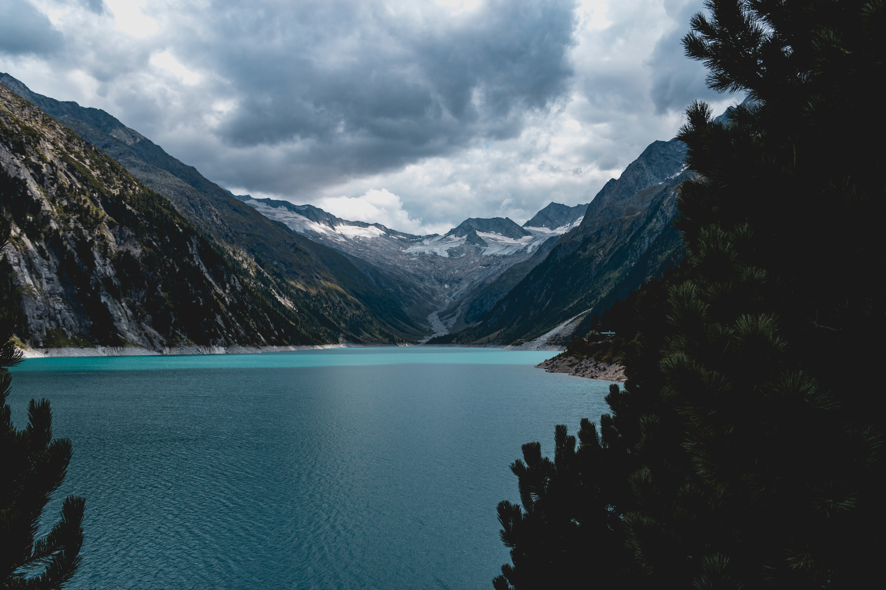
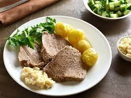
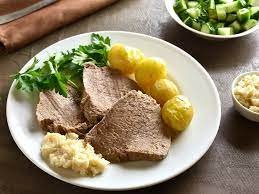

L'Autriche, pays d'Europe centrale, est célèbre pour son riche passé impérial, sa capitale Vienne dédiée à la musique classique, et ses paysages alpins pittoresques. La cuisine autrichienne propose des plats copieux comme le schnitzel et le strudel aux pommes. C'est un paradis pour les sports d'hiver avec des stations de ski de renommée mondiale. La langue officielle est l'allemand, et le pays offre une excellente qualité de vie avec des systèmes de santé et d'éducation de haute qualité. En outre, l'Autriche a une histoire musicale impressionnante avec des compositeurs célèbres tels que Mozart et Beethoven, ainsi que des festivals de musique animés en été. Ses Alpes offrent des possibilités infinies pour les activités de plein air et la préservation de la nature est une priorité avec ses parcs nationaux préservant une biodiversité remarquable. L'Autriche est également réputée pour sa tradition café et son architecture baroque, ce qui en fait une destination culturelle et historique fascinante.
Vienne, la capitale autrichienne, est une ville emblématique qui marie harmonieusement l'histoire, la culture et la modernité. Cette ville impériale est réputée pour ses rues pavées pittoresques, ses magnifiques palais baroques et ses institutions musicales légendaires. L'une de ses caractéristiques distinctives est son héritage musical inestimable, en tant que lieu ou de compositeurs célèbres ont vécu tels que Mozart, Beethoven et Strauss. L'Opéra d'État de Vienne et le Musikverein, célèbre pour ses concerts de musique classique, sont des institutions mondialement connues. Parmi les trois monuments les plus célèbres de la ville, on trouve la cathédrale Saint-Étienne, une merveille gothique vieille de plus de 700 ans, le Palais de Schönbrunn, ancienne résidence d'été des Habsbourg, et la Bibliothèque nationale autrichienne, un chef-d'œuvre baroque abritant une vaste collection de livres anciens. Vienne allie ainsi son riche passé impérial à une scène culturelle contemporaine florissante, faisant de la ville une destination incontournable en Europe.
Les paysages alpins autrichiens sont parmi les plus spectaculaires d'Europe, offrant une symphonie naturelle de montagnes majestueuses, de vallées verdoyantes et de lacs cristallins. Les Alpes autrichiennes s'étendent sur des kilomètres, offrant des sommets enneigés qui percent le ciel, notamment le Grossglockner, le point culminant du pays. Les prairies alpines sont parsemées de chalets traditionnels en bois, créant une atmosphère pittoresque. Les forêts denses couvrent les flancs des montagnes et abritent une faune diversifiée, notamment des chamois et des marmottes. Les lacs alpins, tels que le lac Wolfgangsee et le lac Zell am See, offrent des reflets époustouflants des montagnes environnantes. L'Autriche est également renommée pour ses stations de ski de renommée mondiale, attirant des amateurs de sports d'hiver du monde entier. En toute saison, les paysages alpins autrichiens offrent une expérience visuelle inoubliable, ainsi qu'une opportunité de se connecter à la nature dans toute sa splendeur.



La gastronomie autrichienne est une célébration des saveurs robustes et des traditions culinaires riches. Elle est célèbre pour ses plats réconfortants et sa passion pour les ingrédients de qualité. Le Wiener Schnitzel, une escalope de veau panée et frite, est un incontournable, tout comme le Tafelspitz, un délicieux bouilli de bœuf servi avec une variété de sauces. Les Knödel, de délicieuses boules de pâte farcies ou non, sont un accompagnement populaire. Les Autrichiens raffolent également de leurs pâtisseries, avec le Sachertorte, un gâteau au chocolat, et l'Apfelstrudel, une tarte aux pommes, qui sont des douceurs emblématiques. La cuisine autrichienne s'accompagne souvent d'excellents vins autrichiens, issus des vignobles pittoresques du pays. Que ce soit dans un Heuriger, une taverne traditionnelle, ou un restaurant raffiné, la gastronomie autrichienne offre une expérience culinaire mémorable qui allie tradition et innovation.
 

Le Wiener Schnitzel
Le Tafelspitz
Les Knödel
le Sachertorte